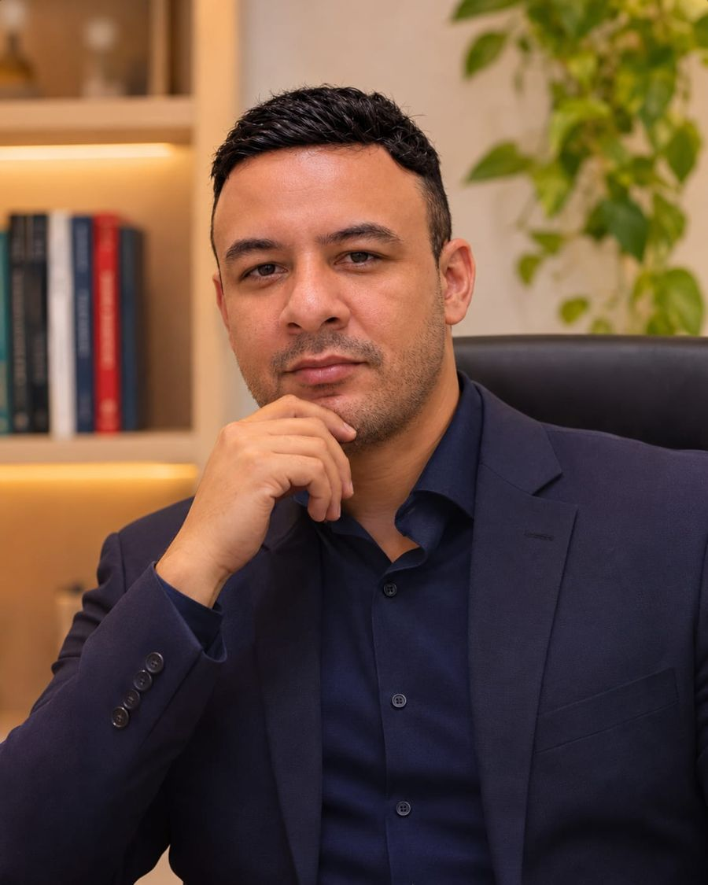
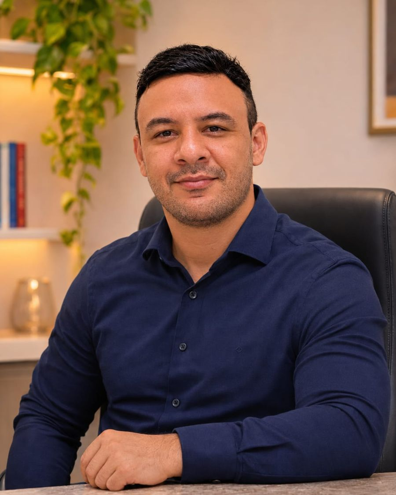
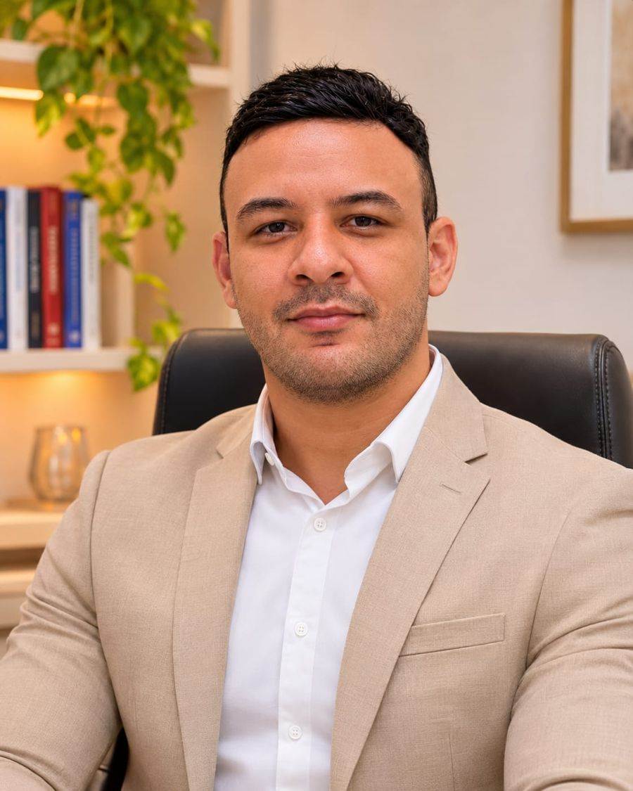
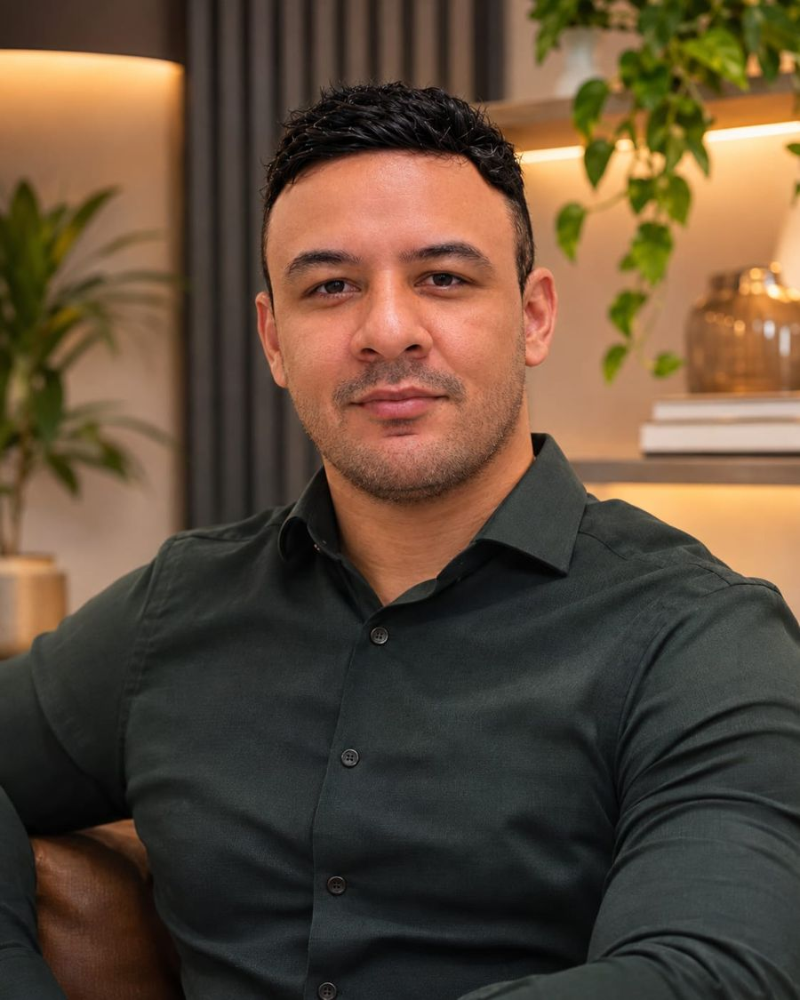
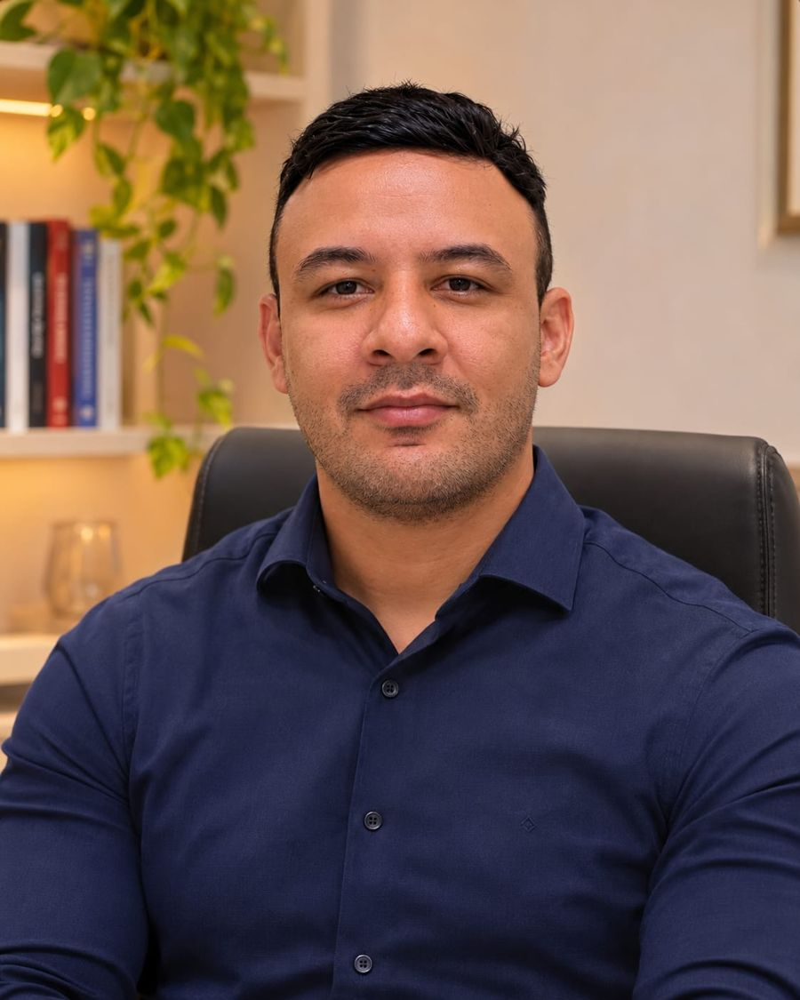

Escuta e acolhimento
Ouvir com atenção, compreender o histórico e respeitar o tempo e as particularidades de cada pessoa.
Farmacêutico Clínico • Cuidado Farmacêutico • Saúde Integral
Sou Dr. Walliston Emmanuel, farmacêutico clínico. Reúno experiência no acompanhamento farmacoterapêutico e formações em diferentes áreas da saúde para oferecer escuta, orientação técnica e atenção às particularidades de cada pessoa.
Mais do que observar medicamentos, procuro entender a pessoa, sua rotina, suas dúvidas e a realidade em que vive.

Acredito que nenhum atendimento deve começar com pressa ou respostas prontas. Cada paciente traz uma história, experiências de tratamento, dúvidas, expectativas e necessidades que merecem ser compreendidas. Minha proposta é unir conhecimento farmacêutico, comunicação clara e acolhimento para promover escolhas mais seguras e um acompanhamento verdadeiramente individualizado.
Ouvir com atenção, compreender o histórico e respeitar o tempo e as particularidades de cada pessoa.
Avaliar o uso de medicamentos e suplementos, promover segurança farmacoterapêutica e orientar com responsabilidade.
Organizar informações, acompanhar necessidades e reconhecer quando a atuação conjunta com outros profissionais é indispensável.

Quem sou
Farmacêutico Clínico • CRF-MG nº [a confirmar]
Sou farmacêutico clínico, com trajetória construída no atendimento às pessoas, na responsabilidade técnica de farmácias, na assistência farmacêutica e na gestão de equipes. Ao longo dos anos, compreendi que conhecimento e sensibilidade precisam caminhar juntos: uma orientação tecnicamente correta também deve ser compreensível e respeitar a realidade de quem a recebe.
Tenho aproximadamente seis anos de experiência em atendimentos clínicos individualizados, com entrevistas, orientações sobre medicamentos, acompanhamento da farmacoterapia e educação em saúde. Minha vivência profissional inclui empresas e farmácias como Eurofarma, Farmácia Líder, Farmácia Nova Vitória, Droga Líder, Farmácia Milênio, Farmácia Cruzeiro, Farmácia Gaspar, Pague Menos e Drogasil, em diferentes funções e contextos de trabalho.
Investi em pós-graduações e cursos de aperfeiçoamento relacionados à Farmácia Clínica, prescrição farmacêutica, oncologia, infectologia, terapia intensiva, farmácia hospitalar, saúde mental, psicanálise, fitoterapia, psicologia da saúde e outras áreas. Também desenvolvi estudos em terapia naturalista, iridologia e biorressonância quântica, temas que apresento de maneira transparente, respeitando as particularidades e os limites de cada abordagem.
Minha filosofia é simples: duas pessoas podem usar o mesmo medicamento ou apresentar dificuldades parecidas, mas não vivem a mesma história. Por isso, procuro olhar para as necessidades individuais, identificar dúvidas sobre os tratamentos e construir orientações que façam sentido para cada paciente.
“Cada pessoa é única. O cuidado também precisa ser.”
— Dr. Walliston Emmanuel
Atendimentos
Consultas farmacêuticas, revisão de medicamentos, orientações sobre tratamentos, cuidado em saúde mental, apoio farmacêutico na oncologia, fitoterapia e outras áreas de formação. Conheça as possibilidades de atendimento e saiba qual serviço é adequado à sua necessidade.
Orientação e segurança para o uso dos seus medicamentos.
A consulta farmacêutica é um momento de escuta e avaliação profissional dedicado à compreensão do histórico de uso de medicamentos, suplementos, dificuldades de adesão e dúvidas que impactam o autocuidado. Durante o atendimento, conversamos sobre a rotina, os tratamentos prescritos, possíveis efeitos indesejados e necessidades de orientação ou encaminhamento. O objetivo é promover segurança, clareza e uso racional de medicamentos.
Indicado para: quem utiliza medicamentos de maneira contínua, tem dúvidas sobre horários, associações, reações adversas, suplementos ou deseja organizar suas informações de saúde.
Entenda finalidades, horários e potenciais interações quando vários medicamentos são usados juntos.
Quando vários medicamentos são utilizados ao mesmo tempo, é importante entender suas finalidades, horários, potenciais interações e cuidados necessários. Faço revisão farmacêutica das informações disponíveis, identifico pontos que merecem atenção e oriento como conversar com o prescritor sobre eventuais ajustes.
Nenhum medicamento de prescrição é suspenso ou alterado pelo paciente com base apenas em conteúdo do site.
Cada paciente tem uma história que merece atenção ao longo do tempo.
O acompanhamento farmacoterapêutico permite revisar dúvidas ao longo do tempo, verificar dificuldades relatadas, organizar o plano de uso dos medicamentos e reforçar orientações relevantes. A educação em saúde faz parte desse processo: compreender o próprio tratamento é uma maneira importante de participar das decisões juntamente com a equipe responsável.
Decisões técnicas e atendimento individualizado, sempre observando as normas vigentes.
Minha formação em Farmácia Clínica direcionada à Prescrição Farmacêutica contribui para decisões técnicas e para o atendimento individualizado. Quando cabível e juridicamente autorizado, a atuação pode incluir intervenções e documentos farmacêuticos pertinentes, sempre observando as normas vigentes, a segurança do paciente e a necessidade de avaliação por profissional prescritor habilitado.
Receitas, exames e relatórios ajudam a compreender o contexto dos medicamentos em uso.
Receitas, exames laboratoriais e relatórios já disponíveis ajudam a compreender o contexto dos medicamentos em uso. Posso discutir informações relevantes para o cuidado farmacêutico, orientar sobre possíveis efeitos dos tratamentos em determinados parâmetros e identificar situações que devem ser levadas ao médico responsável.
Essa análise não substitui diagnóstico nem interpretação médica de exames.
Apoio farmacêutico complementar em tratamentos complexos.
Pessoas em tratamento oncológico frequentemente convivem com esquemas terapêuticos complexos, dúvidas sobre medicamentos de suporte, efeitos adversos e uso de suplementos. Minha formação em Oncologia orienta um trabalho de suporte farmacêutico: revisar os medicamentos relatados, reforçar cuidados com adesão, observar riscos de interações e facilitar a comunicação com a equipe assistente.
O tratamento do câncer é conduzido pela equipe oncológica; o cuidado farmacêutico é complementar.
Uso correto de antimicrobianos prescritos, adesão e prevenção de erros.
A formação em Infectologia oferece fundamentos para orientar sobre uso correto de antimicrobianos prescritos, adesão ao esquema, prevenção de erros e reconhecimento de sinais que exigem atendimento.
A consulta não substitui o diagnóstico da infecção e não é um canal de fornecimento ou prescrição de antibióticos fora das condições legais.
Compreensão de tratamentos que exigem monitoramento cuidadoso.
Tenho formação em Farmácia Hospitalar e Unidade de Terapia Intensiva, áreas que aprofundam conhecimentos sobre medicamentos de maior complexidade, processos assistenciais, riscos farmacoterapêuticos e comunicação em equipes de saúde. Esses conhecimentos enriquecem minha atuação educativa e clínica, especialmente na compreensão de tratamentos que exigem monitoramento cuidadoso.
Acolhimento e orientação farmacêutica, sem julgamentos.
Ansiedade, estresse, alterações do sono e dificuldades emocionais podem influenciar o cotidiano e a maneira como uma pessoa utiliza medicamentos. Minha formação em Psiquiatria e Saúde Mental, associada à Farmácia Clínica, permite abordar o uso de medicamentos psicotrópicos, dúvidas sobre efeitos adversos, adesão, rotina e necessidade de acompanhamento multiprofissional.
O acolhimento acontece sem julgamento, com encaminhamento a psicólogos e médicos quando necessário.
Um espaço de escuta e reflexão sobre a experiência humana.
Minha formação em Psicanálise sustenta uma proposta de escuta cuidadosa e reflexão sobre experiências pessoais, emoções, relações, conflitos e desafios vividos no cotidiano. O espaço de conversa busca favorecer a compreensão da própria história e das situações enfrentadas. A modalidade, duração, limites de confidencialidade e objetivos são explicados no agendamento.
Esse trabalho não deve ser confundido com avaliação psicológica privativa ou atendimento médico psiquiátrico.
Hábitos, sobrecarga emocional, relações e continuidade de tratamentos.
A maneira como pensamos, convivemos e organizamos a rotina influencia escolhas de autocuidado. Meus estudos em Psicologia da Saúde e comportamento social ampliam a atenção a temas como hábitos, sobrecarga emocional, relações familiares, comunicação e dificuldades de continuidade de tratamentos.
A abordagem é educativa e de acolhimento, respeitando as competências exclusivas da Psicologia.
A entrevista individualizada como recurso para conhecer sua história.
Utilizo a entrevista individualizada como recurso para conhecer história, hábitos, preocupações e dificuldades relatadas. Questionários podem ajudar a organizar temas de conversa, mas não são anunciados como testes psicológicos privativos ou instrumentos de diagnóstico. A entrevista também auxilia a decidir quando indicar outro profissional.
Conhecimento técnico para o uso responsável de produtos vegetais.
A Fitoterapia faz parte da minha formação e do interesse por formas de cuidado que considerem recursos de origem vegetal. Na orientação farmacêutica, avalio as informações disponíveis sobre o uso de plantas medicinais e fitoterápicos, suas precauções, contraindicações e possíveis interações com medicamentos.
O fato de um produto ser natural não elimina riscos; o uso deve ser adequado à pessoa e à situação clínica.
Rotina, alimentação, sono e autocuidado — sem substituir tratamentos necessários.
Minha trajetória inclui estudos ligados ao cuidado naturalista, à rotina, à alimentação, ao sono e aos hábitos cotidianos. Essa perspectiva valoriza a conversa sobre escolhas de vida, bem-estar e autocuidado, sem substituir tratamentos necessários. Cada recomendação é contextualizada e considera a segurança do paciente, especialmente quando existem doenças prévias ou uso de medicamentos.
Uma prática complementar presente na minha trajetória de estudos.
A iridologia faz parte dos estudos e cursos que desenvolvi ao longo da minha trajetória de cuidado integrativo. Trata-se de uma prática tradicional de observação das características da íris, utilizada por seus praticantes como instrumento complementar de conversa e investigação de hábitos. Em minha apresentação profissional, procuro explicar de modo claro como a abordagem é utilizada e seus limites.
A iridologia não é exame diagnóstico validado e não substitui avaliação médica, exames laboratoriais ou outros métodos reconhecidos.
Informações sobre a abordagem e seus limites.
Também tenho conhecimento e experiência de estudo com equipamentos e propostas conhecidos como biorressonância quântica. É um tema de interesse no campo das práticas complementares e pode ser apresentado ao público de maneira informativa, com explicação sobre seus princípios alegados e limites.
Não se trata de exame validado para diagnosticar doenças, identificar alterações de órgãos ou medir vitaminas e minerais.
Acolher cada pessoa sem reduzir o atendimento a uma técnica isolada.
Minha proposta é acolher as necessidades de cada pessoa sem reduzir o atendimento a uma técnica isolada. Conversas sobre hábitos, uso de medicamentos, práticas complementares e histórico de saúde precisam respeitar a segurança, a individualidade e o papel de cada profissional envolvido no cuidado.
Responsabilidade técnica, processos, gestão operacional e equipes.
Além dos atendimentos, acumulo vivência em responsabilidade técnica, orientação farmacêutica, organização de processos, gestão operacional e relacionamento com equipes. Essa experiência me permite dialogar com farmácias, instituições e profissionais sobre boas práticas, cuidado ao paciente, educação em saúde e segurança no atendimento.
Qualificação acadêmica em análise técnica, método e responsabilidade documental.
Minha pós-graduação em Perícia Criminal integra minha trajetória de estudos e desenvolve conhecimentos relacionados à análise técnica, método e responsabilidade documental.
No site, apresento essa qualificação acadêmica sem divulgar serviços de perícia oficial, laudos judiciais ou atribuições que dependam de habilitação ou nomeação específica.
Não sabe qual serviço é o ideal para você? Converse comigo e encontramos juntos a melhor forma de atendimento.
Falar pelo WhatsAppÁreas de formação
Minha formação tem como base a graduação em Farmácia, complementada por estudos de pós-graduação em campos clínicos, hospitalares, comportamentais e de assistência à saúde. A variedade dessas formações contribui para uma visão mais abrangente dos desafios que chegam à consulta.

A formação em Psiquiatria, Psicologia da Saúde, Avaliação Psicológica, Oncologia ou Perícia Criminal não altera a graduação-base nem confere, por si só, os títulos regulados de médico, psicólogo ou perito nomeado.
Como funciona
O contato é realizado pelo WhatsApp. São informadas a modalidade disponível, os horários, os valores atualizados e as orientações de preparação.
Conversamos sobre suas necessidades, histórico de saúde, medicamentos e suplementos utilizados, rotinas e dificuldades relatadas.
Receitas, exames, relatórios e listas de medicamentos já existentes podem ser considerados na avaliação farmacêutica.
São observadas questões pertinentes ao uso dos medicamentos, possíveis riscos, dúvidas e a necessidade de encaminhamentos.
As recomendações são explicadas com clareza e adequadas às necessidades do paciente, dentro dos limites da atuação profissional.
Podem ser combinadas reavaliações para acompanhar dúvidas, adesão e segurança dos tratamentos em andamento.

A distância não precisa impedir o cuidado farmacêutico. Realizo atendimentos online mediante agendamento, por meio de chamada de vídeo, respeitando a adequação técnica de cada serviço. Pacientes de diferentes estados podem receber orientação farmacêutica, inclusive aqueles que já acompanho há anos. Quando for necessário exame físico, avaliação presencial ou atendimento de outro profissional, essa orientação será fornecida.
Realizo atendimentos presenciais em Minas Gerais conforme agenda, especialmente em Uberlândia e Patrocínio. O endereço e a disponibilidade do local são informados no contato de agendamento. Não compareça sem confirmar previamente o horário.
Se tiver, tenha à mão:
Não é necessário enviar documentos sensíveis por formulário público.
Para quem é
Não é necessário esperar que uma dúvida se transforme em problema para procurar orientação. O atendimento farmacêutico existe também para prevenir riscos e promover maior compreensão sobre o tratamento.
Agendar consultaConteúdos
Acredito que compartilhar conhecimento é uma maneira de ajudar as pessoas a fazer perguntas melhores, compreender orientações profissionais e participar mais ativamente do autocuidado. Nesta seção, você encontra vídeos, conteúdos e reflexões sobre assuntos que fazem parte da minha trajetória.
Uso racional, interações, dúvidas frequentes e acompanhamento de tratamentos.
Sono, estresse, autocuidado, acolhimento e segurança de medicamentos.
Cuidados farmacêuticos de apoio e orientações sobre suplementos e interações.
Informação responsável sobre precauções, riscos e utilização.
Reflexões sobre respeito, limites, gratidão, compromisso e relações humanas.
Reflexões pessoais de caráter educativo e inspirador, separadas das orientações técnicas de saúde.
Participações profissionais, projetos e conversas públicas.
Acompanhe os conteúdos no Instagram →
Parcerias
Tenho interesse em construir parcerias com farmácias, clínicas, instituições, profissionais e projetos de educação em saúde. Minha experiência em farmácia comunitária, responsabilidade técnica, atendimento e gestão pode contribuir para iniciativas sobre uso racional de medicamentos, segurança do paciente, atendimento humanizado, comunicação de equipes e orientação farmacêutica.
Também produzo vídeos, conteúdos educativos e reflexões sobre saúde, comportamento e relações humanas, buscando utilizar uma linguagem acessível ao público. Para convites, entrevistas, palestras e parcerias, entre em contato pelo canal profissional.
Propor parceriaPerguntas frequentes
Não encontrou sua pergunta? Fale comigo pelo WhatsApp.
Não. Sou farmacêutico clínico, com graduação em Farmácia e formações complementares. Meu atendimento respeita as competências profissionais da Farmácia.
Não me apresento com esses títulos. Tenho pós-graduações e estudos relacionados à saúde mental, psicologia da saúde e psicanálise, mas a atuação como psicólogo ou médico psiquiatra exige formações e registros próprios.
Sim. A revisão de medicamentos em uso e o esclarecimento de dúvidas são partes importantes da consulta farmacêutica.
Sim. Informações já disponíveis auxiliam a compreender a farmacoterapia. A orientação farmacêutica não substitui diagnóstico ou laudo médico.
Mudanças em medicamentos de prescrição dependem das atribuições legais e da avaliação do prescritor responsável. Nunca altere o tratamento por conta própria.
O atendimento observa a regulamentação vigente e somente pode incluir atos de prescrição que sejam legalmente permitidos e apropriados ao caso.
Posso oferecer orientação farmacêutica, escuta e informações sobre autocuidado e medicamentos, com encaminhamento a profissionais de saúde mental quando necessário.
Sim, com orientação farmacêutica de suporte, em complemento ao acompanhamento da equipe oncológica.
Sim. Avalio informações sobre uso, segurança, interações e precauções no contexto farmacêutico.
Posso orientar sobre medicamentos manipulados e aspectos farmacêuticos, respeitando a legislação, a indicação individual e a necessidade de prescrição válida quando exigida.
A iridologia integra meus estudos em práticas complementares. Não a apresento como exame diagnóstico validado nem como substituta de avaliações clínicas.
É uma denominação usada para práticas e aparelhos complementares. A técnica não é validada para diagnosticar doenças ou medir substâncias no organismo, e sua divulgação prática requer atenção às regras sanitárias.
Por agendamento, com entrevista e orientações em chamada de vídeo quando a modalidade for adequada ao atendimento solicitado.
Em Minas Gerais, especialmente em Uberlândia e Patrocínio, de acordo com a agenda e o local confirmados pelo WhatsApp.
Sim, para serviços farmacêuticos compatíveis com atendimento remoto e com as regras aplicáveis.
A duração depende da modalidade e da necessidade, sendo informada antes do agendamento.
O valor atualizado é informado no contato de agendamento, juntamente com a duração e a modalidade.
Basta selecionar o botão de WhatsApp e solicitar informações sobre a consulta com Dr. Walliston Emmanuel.
Documentos de saúde devem ser compartilhados apenas por canal adequado, com orientação e proteção de privacidade.
Não pelo site ou pelo WhatsApp. Em situações urgentes, procure imediatamente um serviço de emergência.
Contato e agendamento
Se você deseja agendar uma consulta farmacêutica, tirar dúvidas sobre modalidades de atendimento ou conhecer melhor meus serviços, entre em contato pelo WhatsApp. Será um prazer explicar como funciona o acompanhamento e verificar a melhor forma de atendimento para você.
